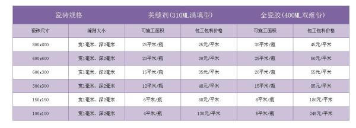
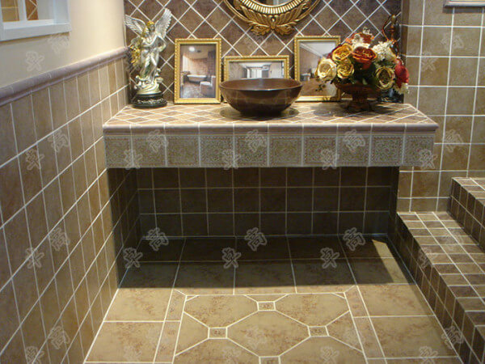

（1）贴牌产品，由于贴牌产品成本较低，所以市场上出现大量的新品牌
（2）公司多品牌战略，（一个公司持有多个品牌）
至于如何选择美缝剂这个问题，其实真的很简单，这家公司有没有自己的研发团队，产品售后是否有保障，产品有没有经过国家的各项质量安检，其次正规厂家生产的每一只产品都会有防伪码。至于网上一搜一大堆的所谓经验、体验，差不多都是王婆卖瓜式的……
最后提醒大家一个事情，美缝剂、瓷流平、满填王都会出现一定的收缩，塌陷，所以才出现了真瓷胶。弥补了此前产品的缺陷，所以选择的时候基本可以略过这些产品了。
表面光洁、易于擦洗、方便清洁、防水防潮，可以避免缝隙孳生霉菌危害人体健康。同时拥有95%的硬度兼具5%的高柔韧性，让施工后的瓷砖缝隙更平滑饱满的同时，拥有较高的柔韧性更好的贴合瓷砖边缘，对边缘起到更好的防护作用，有效避免了由于产品胶体过硬而导致的瓷砖崩瓷等损砖问题。再度升级为柔性真瓷王。
柔性真瓷王的优点是柔性和耐黄变，柔性是为了克服热胀冷缩造成的裂砖，爆砖等现象。耐黄变是为了解决未来变色发黄的问题，但是耐黄变是需要时间检验的，1年或者2年以后，柔性真瓷王和其他质量差的产品就区别开了。
济宁市鱼台建材 版权所有 关键词：鲁南真瓷王